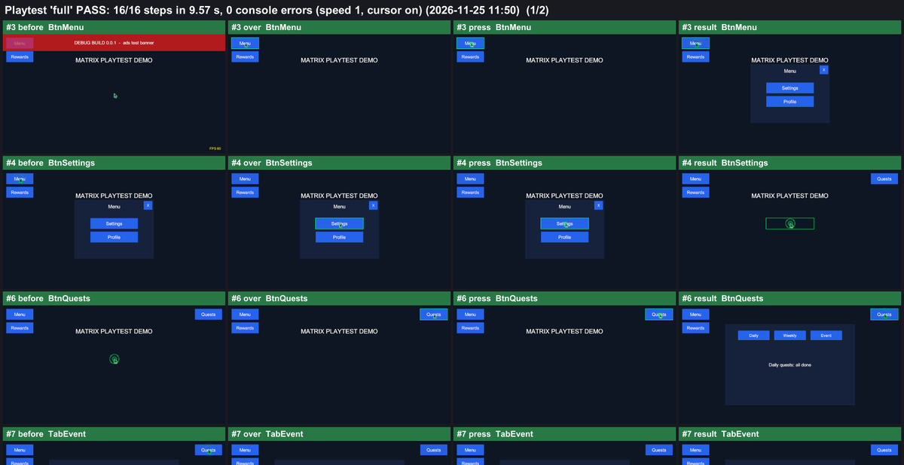
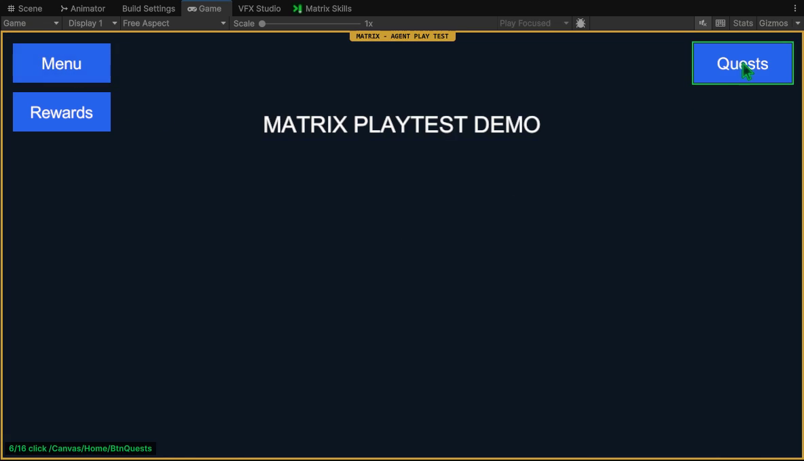

Everyday use
Playtest your game
New in 2.0. Write the steps of a playtest once in your project's Docs/Playtest.md, and your client plays them in play mode with one call: a visible cursor clicks your uGUI buttons, every shot waits for the UI to settle, and the answer is a step table with a contact sheet.
full flow of the demo scene: 14 clicks, 16 steps, 9.6 s, 0 console errors. The caption at the bottom left names the step being played.What you get#
- One call per flow.
playtestenters play mode in the file'sstart-scene, hides what covers the screen, plays the steps and leaves play mode. It survives the domain reload of entering play mode. - Clicks a player could make. A click waits until its target is active, interactable and on top, then clicks at once. A covered button fails with the path of what lies over it, so a real popup bug is not clicked through.
- A cursor you can watch. It flies to each target and plays a click animation over the Game view. It is drawn with UI Toolkit over the window: nothing enters your scene, raycasts or builds.
- Shots of finished screens. A
shotwaits until tweens, fades, Canvas toggles and panel moves have stopped. - Your saves come back. PlayerPrefs and
persistentDataPathare snapshotted before the run and put back after it; the report lists what the flow changed. - Console errors fail the run. A flow whose steps all pass still reports
FAIL (console errors: n)when the game logged errors.
Turn it on#
playtest is off by default. Ask your client to run a playtest: the matrix-playmode skill tells it to switch the tool on with tool-set-enabled-state. You can also switch it on in the Skills window.
Write Docs/Playtest.md#
A playtest is data, not code. The file lives in Docs/ (or docs/, ProjectDocs/, Documentation/) at the project root. Your client can write it for you: it lists every button on screen with its path and label, then writes one flow per thing a player does.
## Setup start-scene: Assets/Scenes/Boot.unity speed: 1 # cursor speed; 1 = calm demo, 4 = fast cursor: on autoshot: clicks # before, over, press and result of every click ## Clear screen - hide /Canvas/DebugBanner - hide-type FpsCounter ## Flow: open-settings - click /Canvas/Home/BtnSettings - expect-visible /Canvas/SettingsPanel/Window - shot settings - click /Canvas/SettingsPanel/Window/BtnClose - expect-hidden /Canvas/SettingsPanel/Window ## Flow: full - run open-settings
| Step | Does |
|---|---|
click <path or "label"> [timeout] | Waits until the target is shown, interactable and not covered, moves the cursor and clicks. |
expect-visible / expect-hidden <path> | Visible means active, every Canvas above it on and an alpha above 0. |
expect-active / expect-inactive <path> | GameObject active state only. |
wait-until <Type.Member> <value> [timeout] | Waits until a static field, property or parameterless method reads the value; a round or a timer no longer needs a guessed wait. |
wait <seconds> | Real time, for games with nothing to read. |
shot <name> [settle seconds] | Game view PNG with the cursor, once the UI has settled. |
call <Type.Method> [args] | A static method for setup and cheats that are not under test. A check that throws fails the step cleanly. |
hide <path> / hide-type <Component> | Turns off debug strips and overlays for this run. |
timescale <n> / run <flow> | Speeds the game up (restored after the run) / inlines another flow. |
Keep buttons that show an ad, buy, spend or create save data at random out of flows: in the Editor an ad usually counts as watched at once and pays out for real.
Read the result#
The answer is a verdict line, one row per step with its time, the console errors and the side effects on your saves. Shots, report.md and contact_sheet.png go to Docs/Playtest_Runs/<stamp>-<flow>/; keep that folder out of git.


autoshot: clicks every click adds a row to the contact sheet: before, cursor over the target, press and result.Change the cursor#
Create a theme with under an Editor folder, fill in your idle sprite and click sheet, and point the file at it with cursor-theme: Assets/Editor/MyCursor.asset. cursor-layers: turns the outline, the caption or the blocked note off; a class that implements IPlaytestCursorLayer adds a layer of your own.

